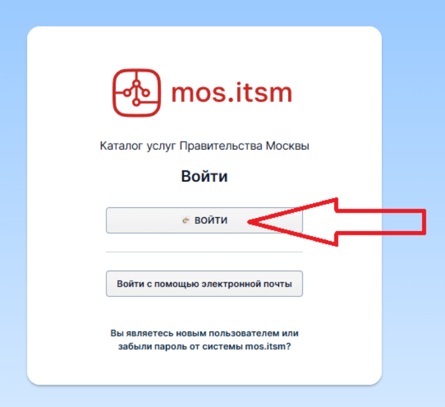
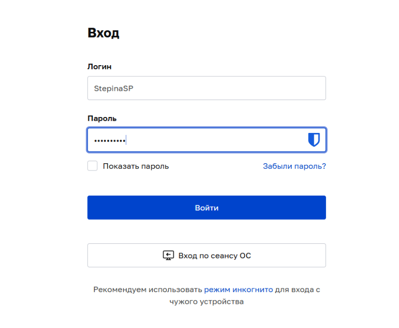
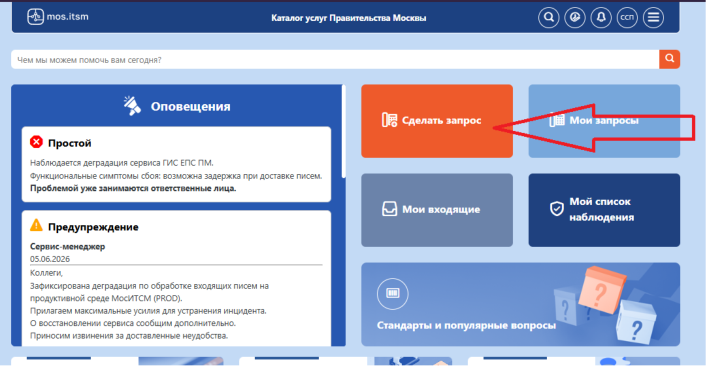
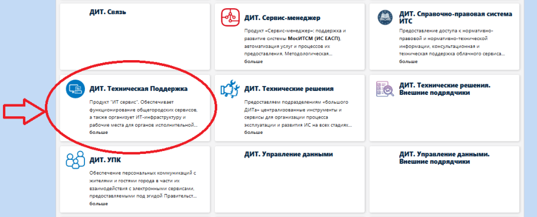
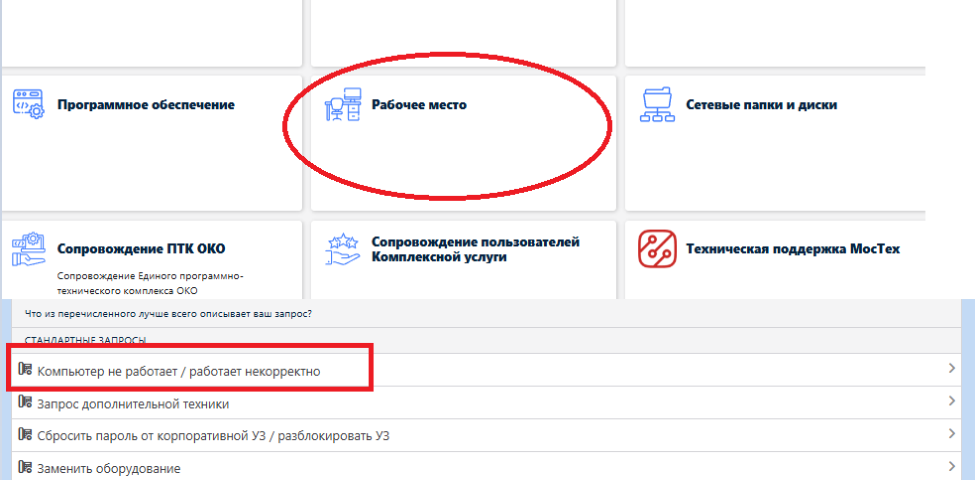
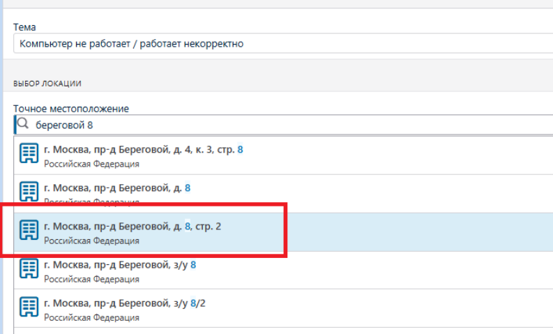
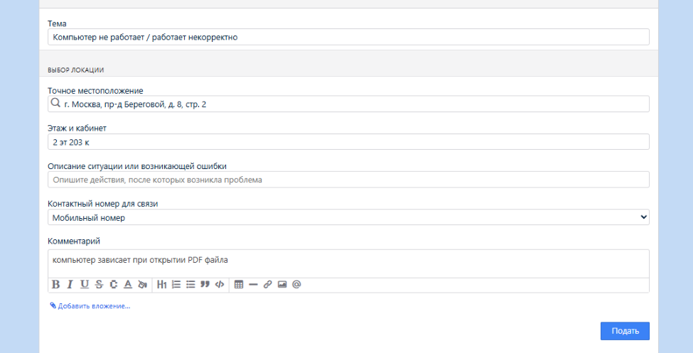

Подача заявки в техподдержку ДИТ
Пошаговая инструкция по порталу moscow.itsm.mos.ru: вход через СУДИР, выбор услуги, адрес, отправка. Ниже — та же последовательность, что в PDF, но текстом.
Шаг 1
При входе на портал технической поддержки ДИТ https://moscow.itsm.mos.ru/ нажимаем кнопку «Войти» и авторизуемся через СУДИР с помощью единой учетной записи в mos (логин и пароль для входа в компьютер, в почту, в «Команда Москвы» и тп). Ярлык для быстрого доступа к сайту можно взять в папке Общая\ярлыки\техподдержка ДИТ.url


Шаг 2
На главном экране выбираем «Сделать запрос», если хотите подать новую заявку. Можно обратить внимание на оповещения от ДИТ в левой части – возможно имеется массовая проблема и ваша входит в тот же сбой.

Шаг 3
В рамка комплексной услуги, наши заявки подаются через меню «ДИТ. Техническая Поддержка». Так что выбираем эту вкладку в следующем окне.

Шаг 4
На следующем этапе уже выбираем категорию, в которой у нас возникли проблемы. В основном можно подавать через выбор «Рабочее место» -> «Мой компьютер не работает / работает некорректно»

Шаг 5
На следующем этапе мы указывает данные по своему местоположению. В графе «Точное местоположение» указывает адрес ЕЦП – набираем «Береговой 8» и автозаполнение предложит нам полный адрес «г. Москва, пр-д Береговой, д. 8, стр. 2»

Шаг 6
Заполняем поля с местоположением, выбираем номер для связи и описываем проблему в поле «Комментарий». После нажимаем кнопку «Подать»

Шаг 7
После этого в почте появится письмо с номером заявки и ссылкой на нее, по которой можно вернуться и отследить ее статус выполнения.
Просьба проверять почту или статус заявки на главной странице портала. При изменениях в заявке, или появлении в ней новой информации, ее статус будет меняться и в почту будет приходить соотвествуещее письмо. Инженер ДИТ может писать комментарии о дополнительной информации по запросу. Так же поддержка может выполнять настройку вашего АРМ или своей серверной/сетевой структуры удаленно и запрашивать обратную связь, т.к. проблему удалось исправить без физического доступа к вашему ПК.